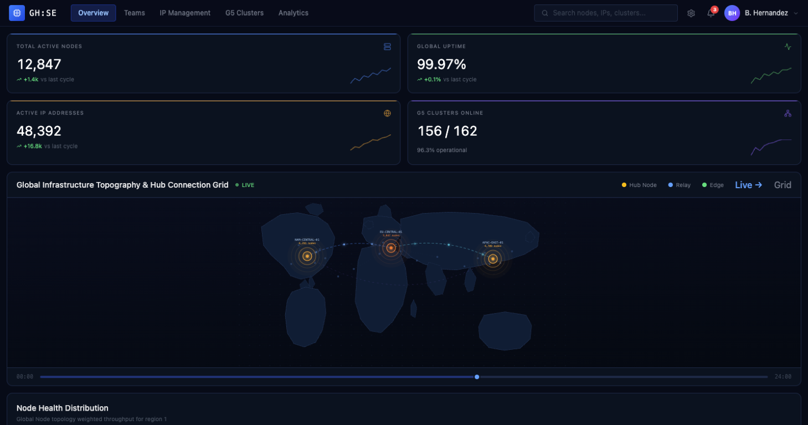

General Motors / 04
ISE Infrastructure Dashboard
The ISE project required a centralized analytics dashboard for visualizing infrastructure data, servers, IP systems, and global network environments.
My role
UX/UI Designer & Full-Stack Developer
Explore prototype ↗

01 / The problem
What needed to change.
The ISE project required a centralized analytics dashboard for visualizing infrastructure data, servers, IP systems, and global network environments.
02 / My contribution
Where I made a difference.
- Designed and developed dashboard interfaces, workflows, and analytics-focused UI systems.
- Created interactive map-based infrastructure visualizations and scalable data visualization experiences.
- Contributed to frontend implementation, backend collaboration, and data workflow planning around node and ICE cluster systems.
03 / Product capabilities
What the product supported.
- Global maps
- Server and IP tracking
- Dynamic dashboards
- Filtering systems
- ICE cluster management
04 / Outcome
Why it mattered.
Improved enterprise infrastructure visibility through scalable, data-driven visual experiences for monitoring and managing global systems.